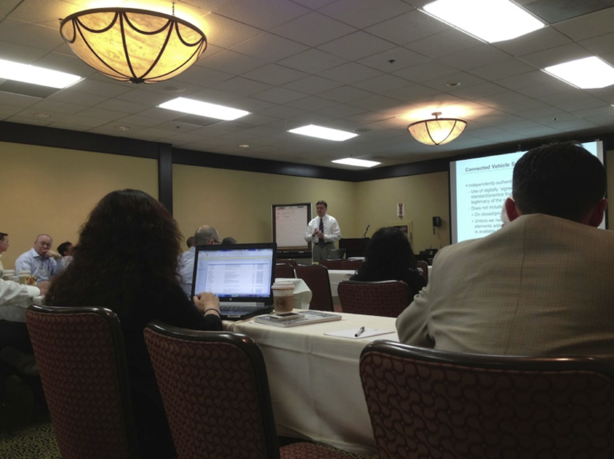
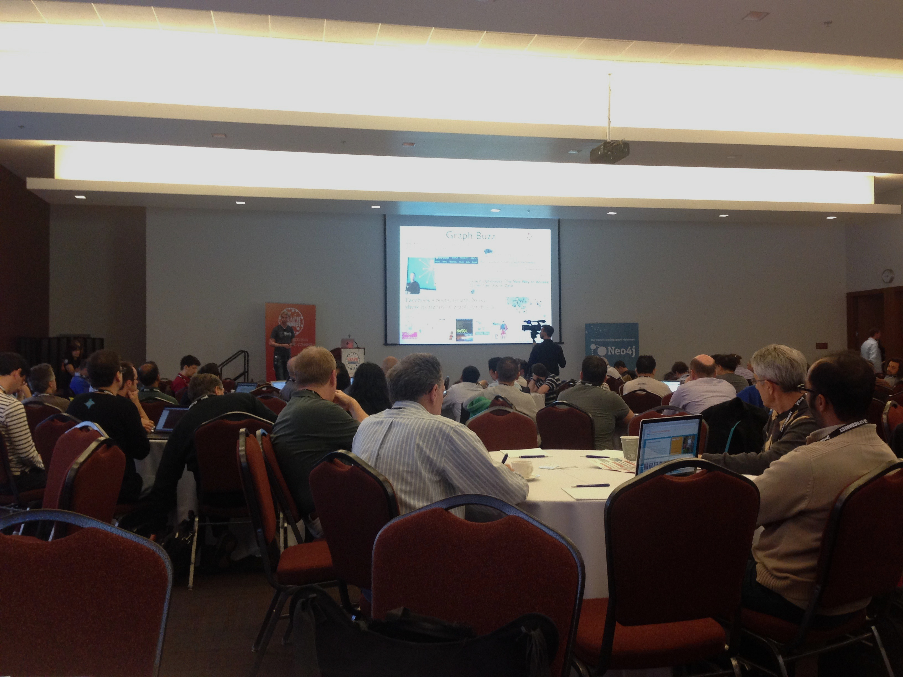
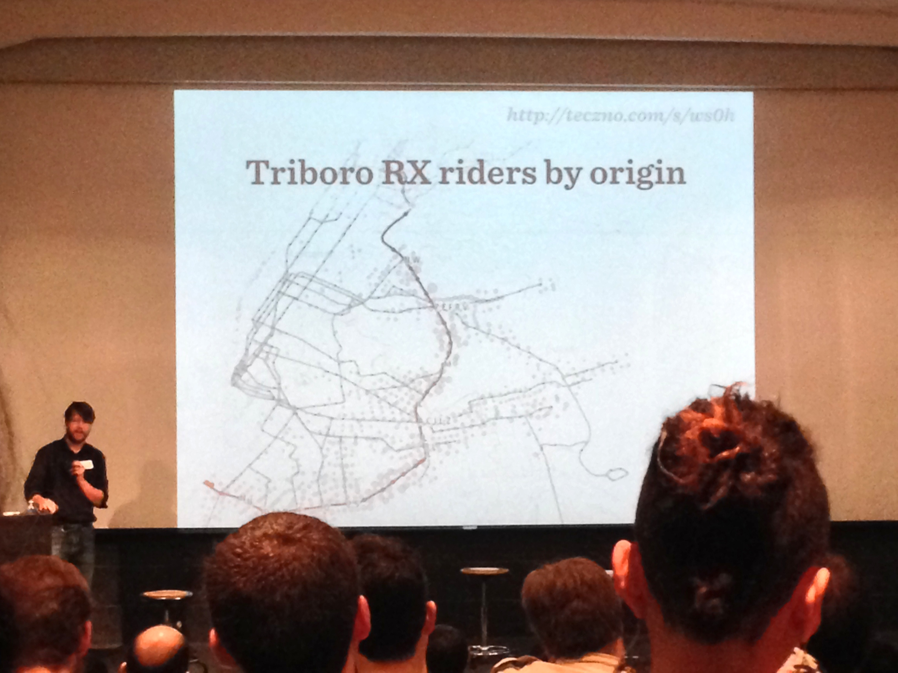
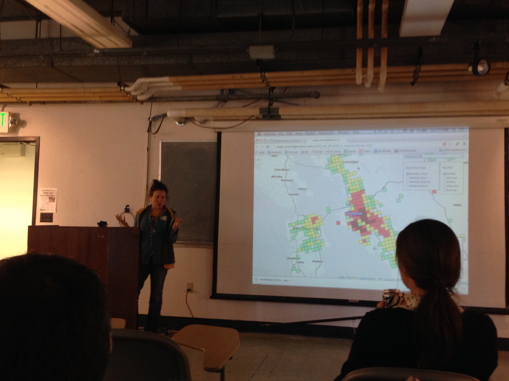

Decision Support System

Workshop on Connected Vehicle Reference Implementation Architecture program (CVRIA) organized by the Intelligent Transportation Systems Joint Programs Office (ITS JPO). Multiple vendors and implementers of connected vehicle environment (CVE) commented on standards for new technologies and applications
Set of tools to:
Graphlab workhop, San Francisco, July 1st, 2013, 2013

Connected Cars Aps (Uber, Ford, Telefonica) San Francisco, October 2 2013

GraphConnect conference, October 3-4, 2013 , 2013
Transportation Conference, UC Berkeley November 16, 2013
Transportation Conference, UC Berkeley November 16, 2013
Knowledge from transportation domain
Routing in traffic - related to TrafficEq
Application of communities in traffic